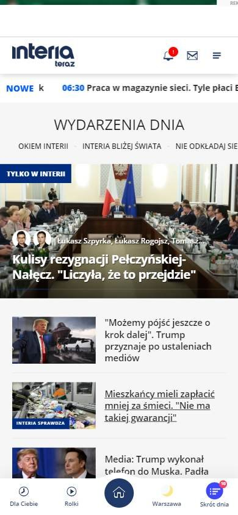
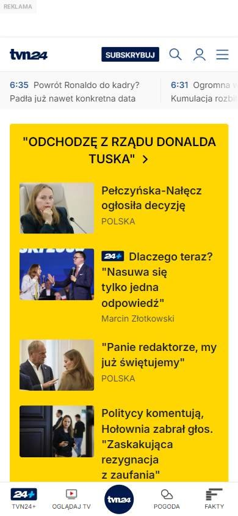
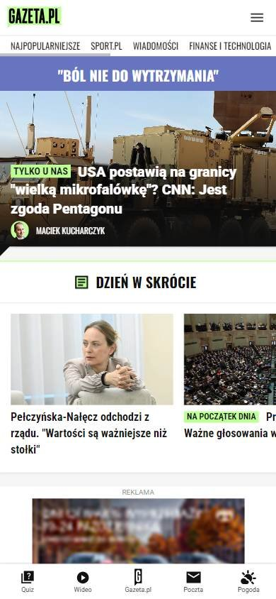

Sitio informativo o de noticias
Los seleccionados
Los tres sitios más visitados de Polonia, según estadísticas de tráfico.
En resumen: lo que hacen los líderes
La pantalla de inicio de cada uno



Estilo visual
Colores, imágenes, tipografía y cuánta información muestran.
Tu estilo visual debería…
- Blanco como base y un color de acento (amarillo) para la noticia principal.
Lo que tienen en común: Interfaces blancas con un color de acento para destacar la noticia principal.
La paleta de cada uno
Medida sobre la primera pantalla. Los colores de marca salen del header; el resto muestra cuánto espacio ocupa cada color.
Así lo resuelve cada uno
Ficha comparativa
| Aspecto | Interia | TVN24 | Gazeta.pl |
|---|---|---|---|
| Paleta | Acotada: azul + blanco | Acotada: blanco + amarillo de destacado | Acotada: verde + azul + blanco |
| Imágenes | Fotos grandes y medianas | Fotos medianas | Fotos grandes |
| DensidadIgual en todos | Alta | Alta | Alta |
Header
La franja de arriba con el logo y los accesos.
Tu header debería…
- Íconos con nombre debajo para los servicios y el clima del día arriba.
Lo que tienen en común: Header blanco con logo a la izquierda e íconos con su nombre debajo para los servicios. Dos de los tres muestran el clima.
Así lo resuelve cada uno


Ficha comparativa
| Aspecto | Interia | TVN24 | Gazeta.pl |
|---|---|---|---|
| FondoIgual en todos | Blanco | Blanco | Blanco |
| Logo | A la izquierda | A la izquierda | Verde, a la izquierda |
| A la derecha | Íconos con nombre: correo, deportes, podcasts, menú | Suscribirse, buscar, ingresar, menú | Correo, menú |
| Clima arriba | Sí | No | Sí |
Menú y categorías
Cómo se organizan las secciones.
Tu menú y categorías debería…
- Fila de últimas noticias con la hora de publicación.
Lo que tienen en común: Secciones en una fila y, debajo, temas o titulares del momento con la hora.
Así lo resuelve cada uno

Ficha comparativa
| Aspecto | Interia | TVN24 | Gazeta.pl |
|---|---|---|---|
| Formato | Pestañas de temas | Fila de secciones con desplegables | Fila de marcas del grupo |
| Temas del día | «Wydarzenia dnia» | Fila de titulares cortos con hora | — |
Primera pantalla
Lo primero que se ve debajo del header.
Tu primera pantalla debería…
- Destacá la noticia principal con un bloque de color fuerte o una etiqueta de «Exclusivo».
Lo que tienen en común: La noticia principal se destaca con color (amarillo) o con etiquetas de exclusividad.
Así lo resuelve cada uno
Ficha comparativa
| Aspecto | Interia | TVN24 | Gazeta.pl |
|---|---|---|---|
| Formato | Foto grande + titulares al lado | Bloque amarillo con titular en mayúsculas + 4 notas | Foto grande con titular en caja blanca |
| Color de urgencia | Etiqueta azul «Tylko w Interii» | Fondo amarillo | Etiqueta amarilla «Tylko u nas» |